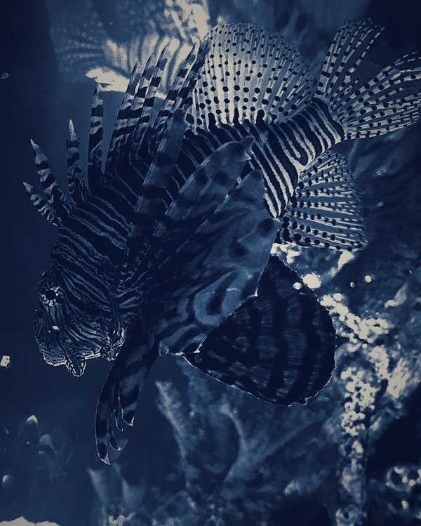
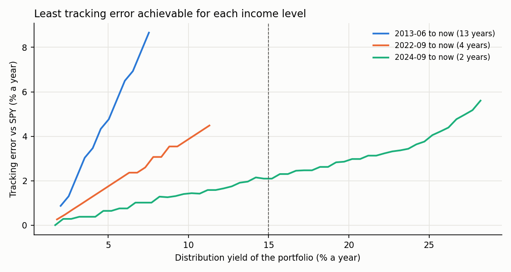
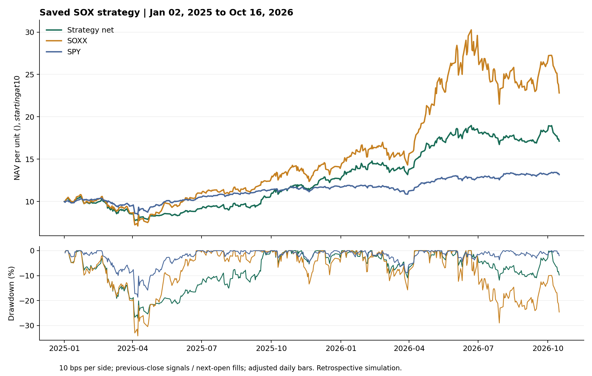

Oscar (Huairui) Zhu
B.A. in Mathematics, second major in Financial Engineering, expected May 2029
Washington University in St. Louis, College of Arts & Sciences
e-mail: huairui.z [at] wustl.edu
GitHub / LinkedIn
Recent Experience:
MY Securities, Wealth Management Intern, July-August 2026, Irvine
(worst-of autocallable payoff modeling; private-stake scenario analysis)
Eagleland, Inventory Management Intern, July-August 2026, Irvine
(time-series demand forecasting; a Python P&L engine reconciling Amazon transactions)
Colight Asset Management, Asset Management Intern, May-July 2026, Shanghai
(fund benchmarking; a 2× CSI 300 index-enhancement strategy; offshore LGFV bonds)
180 Degrees Consulting WashU, Consultant, September 2025-present, St. Louis
(AI-enabled underwriting for FTL Finance / Lewis & Clark Holdings)
Software and tools on GitHub
Mandarin and English, both native
Bear Ambassador
Academic Skills Peer Coach

Current Coursework (Fall 2026):
Optimization (ESE 4150)
Introduction to Machine Learning and Pattern Classification (ESE 4170)
Foundations for Higher Mathematics (MATH 3010)
Differential Equations (MATH 2500)
Principles of Financial Accounting (ACCT 2610)
Some Completed Coursework:
Calculus III
Matrix Algebra
Statistics and Data Analysis
Introduction to Econometrics
Intermediate Microeconomic Theory
Introduction to Computer Science (Java)
GPA 3.93 / 4.00; Dean's List, Fall 2025 and Spring 2026

Research:
A public write-up of my semiconductor strategy, including where it fails
Certificates: FINRA Securities Industry Essentials (2026); FRED Data Practitioner, Federal Reserve Bank of St. Louis (2026)
Interests: topology and probability, systematic trading, structured products
Tools: Python (NumPy, pandas, PyTorch, LightGBM, Qlib), R, MATLAB, Stata, SQL, Java, Swift, LaTeX
Projects:
- SOXR-10: a machine-learning strategy on the SOX semiconductor index, 2026. Qlib Alpha158 factors with LightGBM and a TRA multi-expert model; backtest 2016-2024 at Sharpe 1.02 and max drawdown −27%, with an overfitting diagnosis and a cross-index failure test on QQQ and DIA. (link)
- Market beta and the cross-section of returns: a Fama-French study, econometrics paper, 2026. Cross-sectional OLS on 4,563 firms, 2010-2019; beta insignificant (p = 0.52) under robust standard errors.
- A Monte Carlo risk engine, 2026. Correlated lognormal paths and block bootstrap for VaR, CVaR and maximum drawdown.
- Review of a stock-selection backtest, 2026. Next-open fills and label permutations exposed look-ahead bias.
- Portfolio designs, 2026. Seven buy-and-hold ETF portfolios built to trade tracking error against yield, tracked forward daily. (link)
- ItoCanvas: an options lab for macOS, 2026. Pricing, Greeks, implied volatility and scenario heatmaps, in Swift. (link)
- Numerical-correctness tools for NumPy, BLAS and PyTorch, 2026. Exact-reference checkers for einsum, quantization drift and RNG leaks. (link)
- A 30-day NVDA Monte Carlo on an ESP32-S3 microcontroller, 2026.
- with the 180 Degrees Consulting team, Tiered loan underwriting with a quarterly recalibration loop, client engagement for FTL Finance, Spring 2026.
Miscellany:
Head Prefect at YK Pao School, Shanghai, the only 11th-grade recipient
Self-studying Munkres's Topology
A lionfish with more stripes than a variance-covariance matrix
Jazz Combo, guitar, bass and electronic music production
Golf, skiing, and German (Basic German I)
A LinkedIn post on lessons from a McKinsey analyst